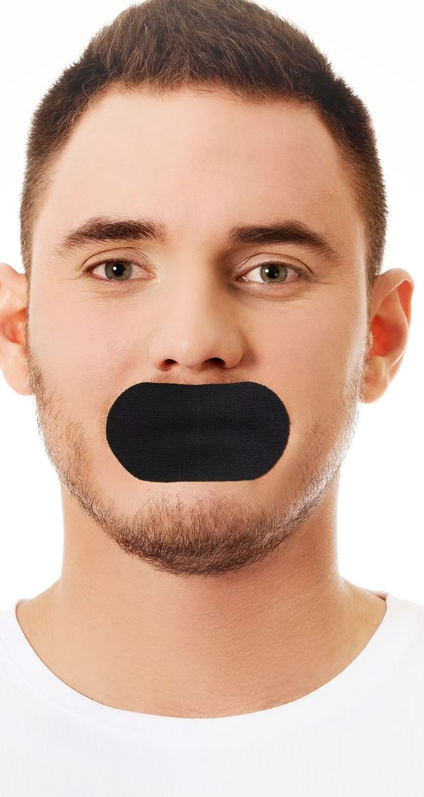
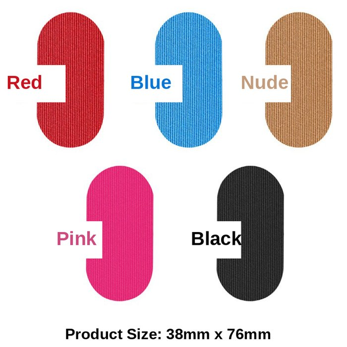

Du musst nicht schnarchen, damit das bei dir passiert. Das passiert wirklich, während du schläfst.
90 Nächte GripNight – genau die Box, die du bekommst.
Dein Wecker klingelt. Du hattest deine acht Stunden. Trotzdem fühlst du dich, als hätte dich ein Lkw überrollt.
Benebelt. Trockener Mund. Du schleppst dich bis zum Mittag und bist beim zweiten Kaffee, bevor du die erste Mail beantwortet hast. Du sagst dir, es ist der Stress, das Alter oder einfach eine schlechte Nacht – nur passiert es fast jede Nacht, und nichts, was du probiert hast, hat etwas geändert.
Was dir kaum jemand sagt: Du musst nicht laut schnarchen, damit dein Schlaf still und leise auseinanderfällt. Irgendwann zwischen Einschlafen und Weckerklingeln fällt dein Mund auf – und dein Körper bekommt nie die Chance, sich richtig zu erholen.
| Was du probiert hast | Was es wirklich löst | Das Ergebnis |
|---|---|---|
| Besseres Kissen, früher ins Bett | Nichts an deiner Atmung | Trotzdem gerädert |
| Melatonin, Magnesium | Du schläfst schneller ein | Gerädert, manchmal schlimmer |
| Schlaftracker (Oura, Whoop) | Zeigt dir das Problem | Löst es nicht – jeden Morgen ein schlechter Score |
| Normales Mundtape | Löst sich um 2 Uhr nachts vom Bart | Klebt am Kissen, nutzlos |
| GripNight | Beard-Grip-Haftung hält die ganze Nacht | Atmung durch die Nase, die ganze Nacht |
So sieht „nur ein bisschen müde“ aus, Nacht für Nacht.
Deine Nase ist genau dafür gemacht: Sie filtert die Luft, wärmt sie an und befeuchtet sie, bevor sie in deine Lunge kommt. Dein Mund kann nichts davon. Sobald er nachts aufgeht, trocknet er aus – und viele Männer kennen die Folgen: unruhiger Schlaf, ein trockener Mund und ein schwerer Kopf am Morgen. Kurze Aufwachmomente, an die du dich nie erinnerst, die dich aber vom wirklich erholsamen Tiefschlaf fernhalten.
Du musst dafür nicht schnarchen. Lautes Schnarchen ist nur die Version, die andere hören. Die meisten Männer haben die leise Version – und zahlen trotzdem jeden Morgen dafür.
Schlafqualität während James Nestors Selbstexperiment in Stanford.
Für sein Buch Breath hat James Nestor im Rahmen eines Experiments in Stanford 10 Tage lang ausschließlich durch den Mund geatmet. Er hatte nicht das Gefühl, dass etwas Dramatisches passiert. Er fühlte sich nur jeden Tag ein bisschen schlechter – benebelter, müder, unkonzentrierter. Erst die Messungen zeigten, wie sehr sein Schlaf gelitten hatte. Dann stellte er auf reine Nasenatmung um – und fühlte sich nach eigenen Angaben schon nach wenigen Tagen deutlich besser.
Genau das sollte dich stutzig machen: Er fühlte sich nicht kaputt. Nur ein bisschen neben der Spur. Genau wie du dich wahrscheinlich gerade fühlst.
Auch Andrew Huberman, Neurowissenschaftler in Stanford und Host des Huberman Lab Podcasts, spricht in seiner Sendung immer wieder über die Vorteile der Nasenatmung im Schlaf. Das ist keine Randtheorie – das Thema wird aus vielen Richtungen untersucht.
Hinweis: James Nestor und Andrew Huberman stehen in keiner Verbindung zu GripNight.
Basierend auf einer Umfrage unter GripNight-Kunden.
Alles, was er probiert hat, hat ein Symptom behandelt. Nichts davon hat die Atmung selbst verändert.
Jedes Produkt, zu dem du gegriffen hast, behandelt ein Symptom deines offenen Mundes – nicht den Mund selbst. Ein besseres Kissen hält deinen Mund nicht zu. Melatonin verhindert nicht, dass dir um 2 Uhr nachts der Kiefer aufklappt. Dein Schlaftracker sagt dir, dass dein Tiefschlaf mies ist – aber nicht, warum.
Und falls du Mundtape schon probiert und aufgegeben hast, hier ist der Grund: Normales Tape ist für glatte Haut gemacht. Es haftet nicht durch Barthaare. Nach ein paar Stunden löst es sich vom Bart, du wachst auf, es klebt am Kissen statt im Gesicht – und du denkst, die ganze Idee funktioniert nicht. Es lag nicht an der Idee. Es lag am Tape.
Nicht einfach ein Streifen Tape – entwickelt für Komfort, Atmungsaktivität und Halt die ganze Nacht.
Gewebt statt Plastik – das Material atmet, du kämpfst nie um Luft.
Leise heißt nicht harmlos. Ob es Geräusche macht oder nicht – dein Schlaf leidet trotzdem.
Das ist der Einwand, der Männer jahrelang festhält. Schnarchen ist der laute Beweis für Mundatmung – aber nicht der einzige. Wenn du mit trockenem Mund, leichten Kopfschmerzen oder diesem typischen Tief am Vormittag aufwachst, gegen das kein Kaffee hilft, fällt dein Mund nachts auf – egal, ob es laut genug ist, um jemanden zu wecken.
Die eigentliche Frage ist also nicht „schnarche ich?“. Sondern: Hast du jemals eine ganze Nacht mit geschlossenem Mund geschlafen? Die ehrliche Antwort der meisten Männer: nicht ein einziges Mal – sie hatten einfach nie eine Möglichkeit dazu.
Genau an diesem Punkt stand ich auch. Das ist passiert, als ich es selbst lösen wollte.
Ich trage seit Jahren Bart – und ich war genauso lange müde. Nicht „anstrengende Woche“-müde, sondern so, dass ich um 10 Uhr morgens auf dem Zahnfleisch ging, egal wie früh ich im Bett war. Ich habe nicht laut geschnarcht. Niemand hat mich nachts angestoßen. Nach allem, was ich sehen konnte, schlief ich gut. Ich fühlte mich nur nie ausgeruht.
Ich habe das Offensichtliche probiert. Ein besseres Kissen. Kein Kaffee mehr am Nachmittag. Melatonin, nach dem ich nur noch benebelter war. Einen Schlaftracker, der mir jeden Morgen sagte, dass mein Tiefschlaf mies ist – ohne zu sagen, warum.
Dann habe ich Breath gelesen und eins und eins zusammengezählt: Mein Mund ging jede Nacht auf. Ich habe jedes Mundtape bestellt, das ich finden konnte. Am Morgen hatte sich jedes einzelne vom Bart gelöst und klebte am Kissen statt in meinem Gesicht.
Also habe ich das gebaut, das hält. Monatelang habe ich Klebstoffe an meinem eigenen Gesicht getestet, bis einer durch den ganzen Bart hielt – die ganze Nacht, ohne zu ziehen oder zu reizen. Am ersten Morgen, an dem es von Anfang bis Ende gehalten hat, wusste ich sofort: Etwas ist anders. Nicht ein bisschen besser – anders. So klar im Kopf hatte ich mich seit Jahren nicht gefühlt.
Das ist GripNight. Gemacht für den Mann, der nicht laut genug schnarcht, als dass es jemand merkt – aber seit Jahren weiß, dass etwas nicht stimmt.
Schnarchen ist die Form der Mundatmung, die man hört. Die meisten Männer haben die Form, die man nicht hört: trockener Mund, Benommenheit am Morgen, das Tief am Nachmittag. Wenn dir das bekannt vorkommt, geht dein Mund nachts sehr wahrscheinlich auf – auch wenn es nicht laut ist.
Ja – genau dafür gibt es GripNight. Normales Mundtape ist für glatte Haut gemacht und versagt bei Gesichtsbehaarung. Die Beard-Grip-Haftung von GripNight hält auf Stoppeln und Vollbart und lässt sich ohne Ziepen ablösen.
Ja. Es verschließt deinen Mund, nicht deine Atemwege. Du atmest ganz normal durch die Nase. Es ist nicht luftdicht – wenn du husten oder niesen musst, löst es sich leicht.
Viele merken schon in den ersten Nächten etwas. Die größeren Veränderungen – ein klarerer Kopf, öfter vor dem Wecker wach – zeigen sich meist in den ersten Wochen, während sich dein Körper an die Nasenatmung gewöhnt.
Genau dafür wurde GripNight entwickelt. Die Beard-Grip-Haftung hält bei Bewegungen im Bart die ganze Nacht – nicht nur ein, zwei Stunden wie normales Tape.
Es ist ein dünner, hautfreundlicher, hypoallergener Streifen – keine Maske, keine Beißschiene. Keine bedenklichen Materialien, keine Rückstände beim Abziehen.
Nicht verwenden bei verstopfter Nase, Erkältung oder wenn du nachts nicht frei durch die Nase atmen kannst; bei bekannter oder vermuteter Schlafapnoe, Atemwegs- oder Lungenerkrankungen; nach Alkohol, Schlaf- oder Beruhigungsmitteln; bei Übelkeit; bei gereizter oder verletzter Haut im Mundbereich. Nicht für Kinder. Wenn du laut schnarchst oder Atemaussetzer bemerkst, sprich vorher mit deinem Arzt.
Starte heute Nacht. Das kannst du erwarten.
Du merkst, dass etwas anders ist, bevor du dich überhaupt aufsetzt. Weniger Nebel im Kopf. Der Morgen fühlt sich nicht mehr wie ein Kampf an.
Deine Morgen fühlen sich so anders an, dass es auch die Leute um dich herum merken. Du bist am Vormittag wach statt beim zweiten Kaffee.
Du schleppst dich nicht mehr durch dein eigenes Leben. Klarer Kopf, gleichmäßige Energie – und keine Fragen mehr, warum sich eine ganze Nacht nie wie eine ganze Nacht angefühlt hat.
Hypoallergen. Dermatologisch getestet. Sanft zur Haut. 30 Nächte pro Box – genau das, was du auspackst.
Ich hätte nie gedacht, dass ich ein Schlafproblem habe – ich schnarche nicht. Aber ich habe mich jeden einzelnen Morgen dahingeschleppt und alles verantwortlich gemacht außer meinem Schlaf. Am Ende war genau das das ganze Problem.
Ich führe mein eigenes Team – einen benebelten Morgen kann ich mir nicht leisten. Das ist das eine Ding, über das ich nicht nachdenken musste. Hat einfach funktioniert, jede Nacht.
Mein Whoop-Recovery-Score lag früher an den meisten Morgen bei 40 und etwas. Ich habe weder mein Training noch meine Ernährung oder sonst etwas geändert – nur angefangen zu tapen. Nach drei Wochen liege ich regelmäßig in den 70ern. Das war die einzige Variable, die sich geändert hat.
Bewertungen aus dem Englischen übersetzt.

Durchgestrichene Preise = Einzelpreis von 19,95 € pro Box. Alle Preise inkl. MwSt., kostenloser Versand. Lieferung in 5–15 Werktagen.

Ein neues Kissen: 80 €. Ein Schlaftracker: 300 €. Ein Monat Melatonin und Magnesium: 30 €. Nichts davon hält deinen Mund nachts zu. GripNight: 34,95 € für 90 Nächte.
90 Tage Geld-zurück-Garantie – ohne Wenn und Aber. Zusätzlich zu deinem gesetzlichen 14-tägigen Widerrufsrecht.
Ergebnisse können variieren. GripNight ist ein Schlaf-Accessoire und kein Medizinprodukt. Es ist nicht dazu bestimmt, Krankheiten zu diagnostizieren, zu behandeln, zu heilen oder ihnen vorzubeugen. Bei Schnarchen, Atemaussetzern oder anhaltenden Schlafproblemen wende dich bitte an deinen Arzt.